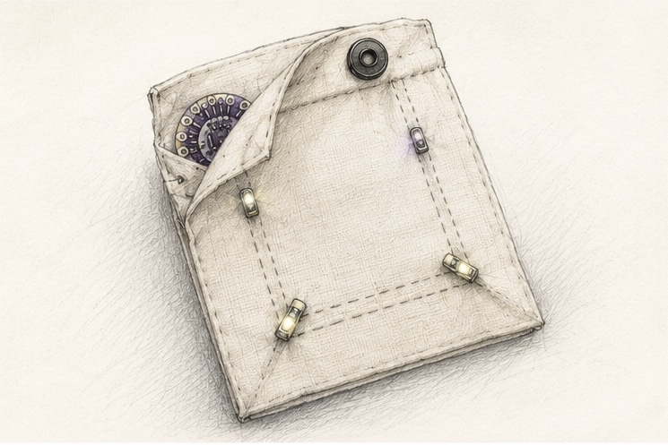
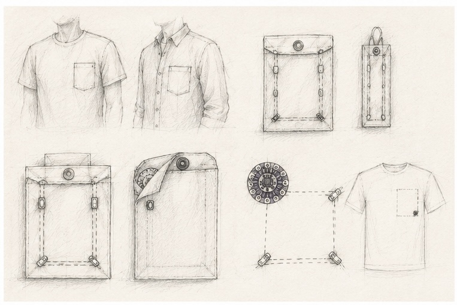
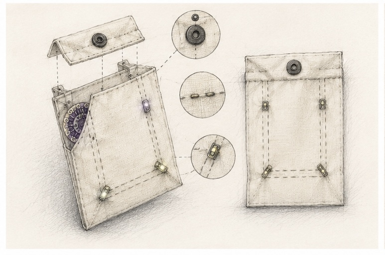
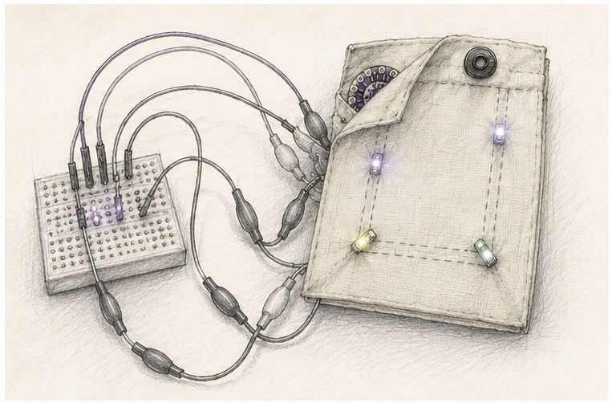
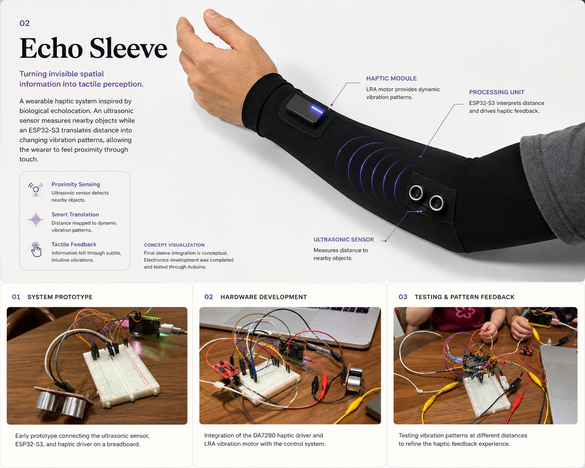

Sensing Pocket
Back to selected work
01
02
03
Wearable Technology Collection
Responsive Wearables
A collection of interactive wearable concepts exploring how sensing, textiles, physical computing, and feedback can become part of everyday experiences.
Echo Sleeve
Power Limit Challenge
Project 01
Sensing Pocket
An everyday pocket reimagined as an interactive wearable.

Contribution
Interaction Design
Prototype Development
Toolkit
LilyPad Arduino
Conductive Thread
LEDs
Textile Construction
Focus
Wearable Design
Physical Computing
Rapid Prototyping



Project 02
Echo Sleeve
Turning invisible spatial information into tactile perception.
Echo Sleeve is a wearable haptic system inspired by biological echolocation. An ultrasonic sensor measures nearby objects while an ESP32-S3 translates distance into changing vibration patterns, allowing the wearer to feel proximity through touch.

Contribution
Interaction Design
Circuit Prototyping
Wearable Concept Development
Toolkit
ESP32-S3
HC-SR04 Ultrasonic Sensor
DA7280 Haptic Driver
LRA Vibration Motor
Arduino
Focus
Sensory Augmentation
Haptic Interaction
Physical Computing
Add your clearest complete breadboard photo here.
Add a close-up electronics photo here.
Add one of your testing photos here.
Prototype Status
The sensing and haptic electronics were successfully developed and tested through Arduino. The final integration into the compression sleeve remained at the concept stage, so the main image is clearly presented as a concept visualization.
Project 03
Power Limit Challenge
Project details and visuals will be added next.
Coming Next
This section is intentionally reserved so the collection remains accurate while the project description and images are prepared.